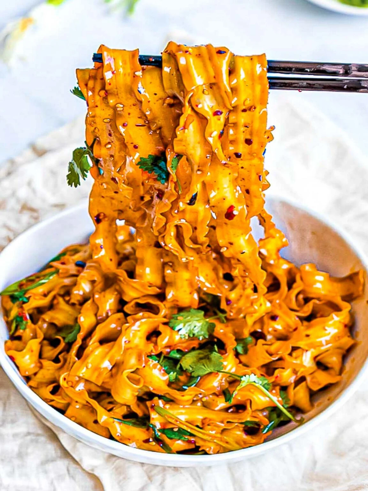

Spicy Szechuan Noodles with Chili Oil

Description
This bowl of szechuan noodles with garlic chili oil packs a huge punch. It is so delicious and can be made within 10 minutes.
- 7 oz flat chinese wheat noodles
- 1 stalk scallions
- Handful cilantro
- Sesame seeds
Szechuan Garlic Chili Oil
- 2 cloves garlic
- 1-2 Tablespoons Szechuan chili flakes
- 3 Tablespoons vegetable oil
- 1 Tablespoon dark soy sauce
- 2-3 Teaspoons chinese black vinegar
- 1/2 Teaspoons ginger
- 1/4 Teaspoons salt
- 3/4 Teaspoons sugar
- Garlic Chili Oil: Saute garlic with vegetable oil in a small pot until it becomes fragrant, about 30 seconds. Remove from the heat and add the rest of the sauce ingredients into the pot.
- Boil noodles: Bring a large pot of water to a boil and cook your noodles according to the directions. Rinse under cold water and drain very well.
- Add sauce: Add as much of the Szechuan chili oil sauce according to your liking and spice level.
- Serve: Top with fresh cilantro, scallions, and a sprinkle of sesame seeds. Serve immediately.